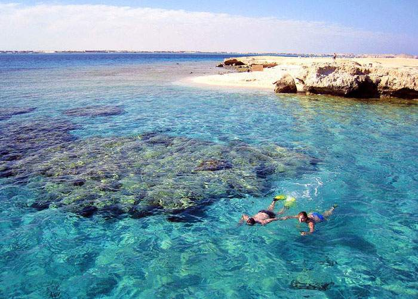
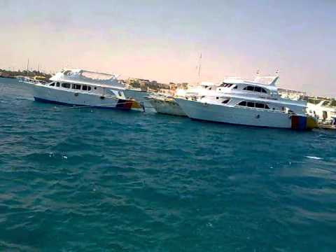

جزيرة الجفتون giftun island تقع بالقرب من مدينة الغردقة تمتاز بشواطئها ذات الرمال الناعمة والتي يحيط بها مواقع الغوص.
تعتبر هذه الجزيرة من اشهر معالم السياحة في الغردقة .
تضم الجزيرة حوالي 14 موقع للغوص بالاضافة الى معالم طبيعية رائعة من ضمنها الشواطئ الجميلة

جزيرة الجفتون في الغردقة giftun island هي أول محمية طبيعية في البحر الأحمر، وتعد من أهم المواطن الطبيعية لطيور النورس حيث يسكنها نحو 50% من طيور النورس في العالم إضافة لأنواع أخرى من الطيور والزواحف
وتعتبر جزيرة الجفتون هي الأولى من حيث الأهمية للقطاع السياحي حيث أنها الجزيرة الوحيدة المسموح بالنزول عليها فقط تتميز بموقعها القريب من مدينة الغردقة وبرمالها الناعمة وما يحيط بها من مواقع غوص. وتعتبر من افضل اماكن السياحة في الغردقة
افضل الانشطة التي يمكنكم القيام بها في جزيرة الجفتون
بامكانكم استئجار المركب، والنزول على شواطئ الجزيرة والاستمتاع بشاطئها الرملي الممهد، والذي يعتبر من اجمل شواطئ العالم ومن اجمل اماكن السياحة في مصر ، وبامكانكم قضاء ساعات تحت اشعة الشمس الرائعة

وبامكانكم ايضاً الركوب على المركب باتجاه عرض البحر الاحمر والنزول للسباحة والتمتع بالمناظر الرائعة لأسماك وشعب البحر الأحمر، ولمن لا يجيد السباحة يستطيع استخدام اللايف جاكيت حتى لاتفوته الاستمتاع بالرحلة
بامكانكم تناول وجبة غداء على المركب في جو رائع وهادئ وسط مياه البحر ومراكبه
بامكانكم التجول في الجزيرة التي تجذب السياح كثيرا لعذريتها دون ان تمتد اليها يد الانسان، ومشاهدة طيور النورس وغيرها من الطيور والزواحف